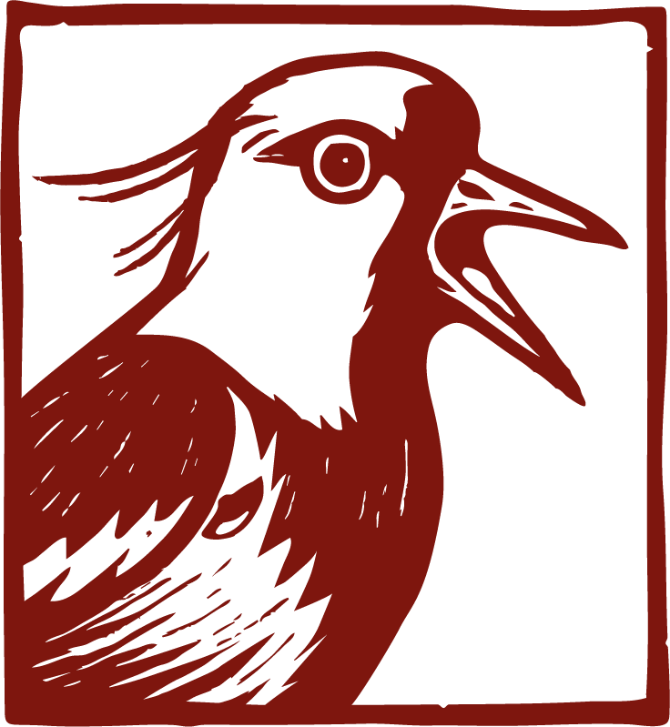

Proyecto #1 · Academic Dataset Explorer
BIBLOS
Proyecto backend desarrollado con Django para importar, organizar y exportar artículos académicos. Incluye filtros dinámicos, ordenamiento, exportación segmentada y gestión modular de datasets.
Este espacio reúne proyectos construidos para practicar desarrollo, backend, QA y diseño de información desde una mirada funcional y social.
Proyecto #1 · Academic Dataset Explorer
Proyecto backend desarrollado con Django para importar, organizar y exportar artículos académicos. Incluye filtros dinámicos, ordenamiento, exportación segmentada y gestión modular de datasets.

Proyecto #2 · Ecommerce · Backend · Bootcamp
Ecommerce desarrollado con Django y PostgreSQL. Incluye catálogo, carrito de compras, autenticación de usuarios, checkout y manejo de permisos, integrando lógica de backend con una interfaz sencilla y funcional.

Proyecto #3 - Prototipo web experimental
Prototipo web experimental para una cafeteria local. Explora branding, narrativa visual y proximamente estrategias SEO para negocios territoriales.